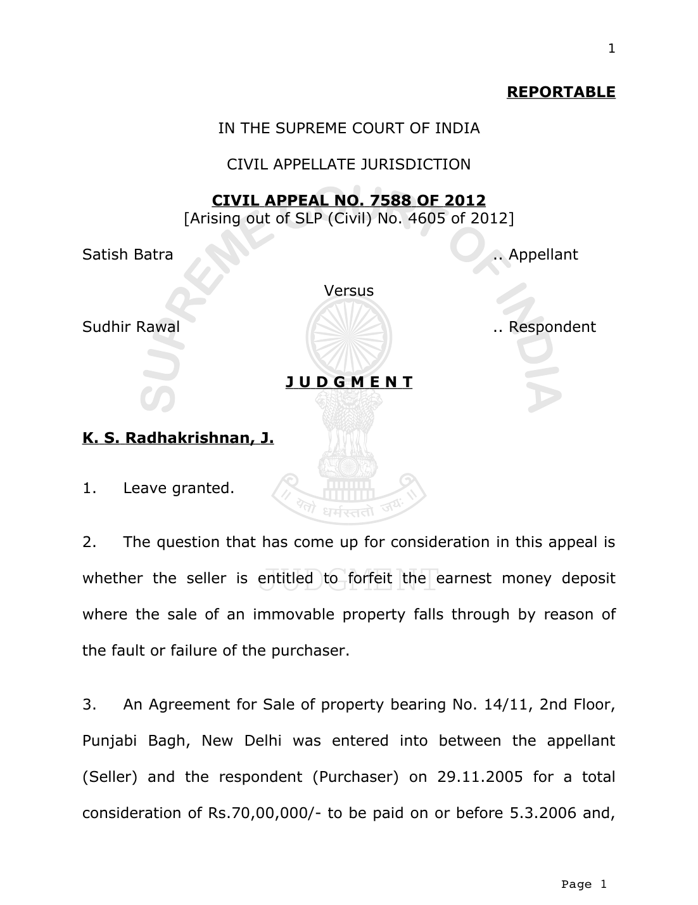
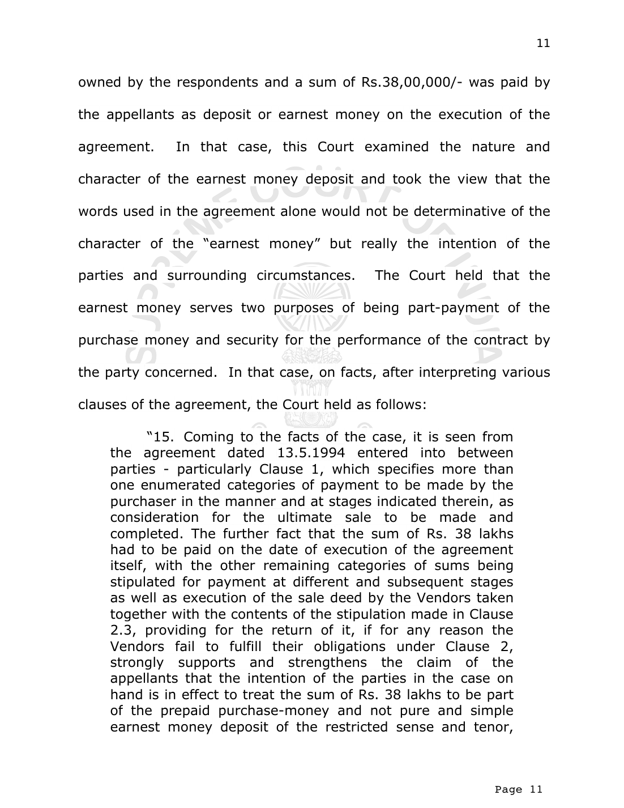

towards earnest money, an amount of Rs.4,00,000/- was paid on 29.11.2005 and another Rs.3,00,000/- on 30.11.2005, that means, altogether Rs.7,00,000/- was paid, being 10% of the total sale consideration. The purchaser, however, could not pay the balance amount of Rs.63,00,000/- before 5.3.2006, consequently, the sale deed could not be executed. Seller, therefore, did not return the earnest money to the purchaser.
- Consequently, the purchaser, as plaintiff, instituted a suit No. 764/08/06 before the Additional District Judge, Delhi for recovery of Rs.7,00,000/- from the seller-defendant of the earnest money paid by him. Defendant contested the suit stating that, as per the agreement, he is entitled to forfeit the amount of earnest money, if there was a failure on the part of the purchaser-plaintiff in paying the balance amount of Rs.63,00,000/-.
- The trial Court dismissed the suit holding that the defendant is entitled to retain the amount of earnest money since the plaintiff had failed to pay the balance amount of Rs.63,00,000/- before 5.3.2006.
- Aggrieved by the judgment of the Additional District Judge, Delhi, plaintiff took up the matter in appeal before the High Court of Delhi by filing R.F.A. No. 137 of 2010. The High Court, placing reliance on the judgment of this Court in Fateh Chand v. Balkishan Dass AIR 1963 SC 1405, took the view that the seller is entitled to forfeit only a nominal amount and not the entire amount of Rs.7,00,000/-. The High Court further held that the seller can forfeit an amount of Rs.50,000/- out of the amount of Rs.7,00,000/- and he is bound to refund the balance amount of Rs.6,50,000/- to the purchaser. To this extent, a decree was also passed in favour of purchaser against the seller. It was also held that the purchaser is also entitled to interest @ 12% per annum from 29.11.2005 till the amount is paid.
- Aggrieved by the said judgment of the High Court, the seller has come up with this appeal.
- We have heard the learned counsel on either side at length. Facts are undisputed. The only question is whether the seller is entitled to retain the entire amount of Rs.7,00,000/- received towards earnest money or not. The fact that the purchaser was at fault in not paying the balance consideration of Rs.63,00,000/- is also not disputed. The question whether the seller can retain the entire amount of earnest money depends upon the terms of the agreement.
Relevant clause of the Agreement for Sale dated 29.11.2005 is extracted hereunder for easy reference: “e) If the prospective purchaser fail to fulfill the above condition. The transaction shall stand cancelled and earnest money will be forfeited. In case I fail to complete the transaction as stipulated above. The purchaser will get the DOUBLE amount of the earnest money. In the both condition, DEALER will get 4% Commission from the faulty party.” The clause, therefore, stipulates that if the purchaser fails to fulfill the conditions mentioned in the agreement, the transaction shall stand cancelled and earnest money will be forfeited. On the other hand, if the seller fails to complete the transaction, the purchaser would get double the amount of earnest money. Indisputedly the purchaser failed to perform his part of the contract, then the question is whether the seller can forfeit the entire earnest money.
- The question raised is no more res integra. In (Kunwar) Chiranjit Singh v. Har Swarup AIR 1926 P.C. 1, it has been held that the earnest money is part of the purchase price when the transaction goes forward and it is forfeited when the transaction falls through, by reason of the fault or failure of the purchaser. In Fateh Chand (supra), this Court was interpreting the conditions of an agreement dated 21.3.1949. By that agreement, the plaintiff contracted to sell his rights in the land and the building to Seth Fateh Chand (defendant). It was recited in the agreement that the plaintiff agreed to sell the building together with ‘pattadari’ rights appertaining to the land admeasuring 2433 sq. yards for Rs.1,12,500/- and that Rs.1,000/- was paid to him as earnest money at the time of the execution of the agreement. The conditions of the agreement were as follows: "(1) I, the executant, shall deliver the actual possession, i.e. complete vacant possession of kothi (bungalow) to the vendee on the 30th March, 1949, and the vendee shall have to give another cheque for Rs. 24,000/- to me, out of the sale price.
- Then the vendee shall have to get the sale (deed) registered by the 1st of June, 1949. If, on account of any reason, the vendee fails to get the said sale-deed registered by June, 1949, then this sum of Rs. 25,000/- (twenty-five thousand) mentioned above shall be deemed to be forfeited and the agreement cancelled. Moreover, the vendee shall have to deliver back the complete vacant possession of the kothi (bungalow) to me, the executant. If due to certain reason, any delay takes place on my part in the registration of the sale-deed, by the 1st June 1949, then I, the executant, shall be liable to pay a further sum of Rs. 25,000/- as damages, apart from the aforesaid sum of Rs. 25,000/- to the vendee, and the bargain shall be deemed to be cancelled."
Plaintiff, on 25.3.1949, received Rs.24,000/- and delivered possession of the building and the land in his occupation to the defendant.
- Alleging that the agreement was rescinded because the defendant committed default in performing the agreement and the sum of Rs.25,000/- paid by the defendant stood forfeited. Plaintiff instituted a suit. The defendant resisted the claim contending inter alia that the plaintiff having committed breach of the contract could not forfeit the amount of Rs.25,000/- received by him. The matter ultimately came to this Court. This Court considered as to whether the plaintiff could forfeit the amount. Noticing that the defendant had conceded that the plaintiff was entitled to forfeit the amount which was paid as earnest money, the Court held as follows: “(16) ..........The contract provided for forfeiture of Rs. 25,000/- consisting of Rs. 1000/-paid as earnest money and Rs. 24,000/- paid as part of the purchase price. The defendant has conceded that the plaintiff was entitled to forfeit the amount of Rs. 1,000/- which was paid as earnest money. We cannot however agree with the High Court that 10 per cent of the price may be regarded as reasonable compensation in relation to the value of the contract as a whole, as that in our opinion is assessed on arbitrary assumption. The plaintiff failed to prove the loss suffered by him in consequence of the breach of the contract committed by the defendant, and we are unable to find any principle on which compensation equal to ten percent of the agreed price could be awarded to the plaintiff. The plaintiff has been allowed Rs. 1,000/-which was the earnest money as part of the damages. Besides he had use of the remaining
| sum of Rs. 24,000/-, and | we can rightly presume th | at he | ||
| must have been derivin | g advantage from that a | mount | ||
| throughout this period. I | n the absence therefore o | f any | ||
| proof of damage arising fr | om the breach of the c | ontra | ct we | |
| are of opinion that the | amount of Rs. 1,000/ | - (e | arnest | |
| money) which has been f | orfeited, and the advantag | e that | ||
| the plaintiff must have de | rived from the possession | of the | ||
| remaining sum of Rs. 24, | 000/-during all this period | would | ||
| be | sufficient compensation | to him. It may be added th | at the | |
| plaintiff has separately cla | imed mesne profits for | being | kept | |
| out of possession for w | hich he has got a d | ecree | and | |
| therefore the fact that th | e plaintiff was out of | possession | ||
| cannot be taken into acc | ount in determining damag | es for | ||
| this purpose.' The decr | ee passed by the H | igh | Court | |
| awarding Rs. 11,250/- a | s damages to the plaintiff | must |
sum of Rs. 24,000/-, and we can rightly presume that he must have been deriving advantage from that amount throughout this period. In the absence therefore of any proof of damage arising from the breach of the contract we are of opinion that the amount of Rs. 1,000/- (earnest money) which has been forfeited, and the advantage that the plaintiff must have derived from the possession of the remaining sum of Rs. 24,000/-during all this period would be sufficient compensation to him. It may be added that the plaintiff has separately claimed mesne profits for being kept out of possession for which he has got a decree and therefore the fact that the plaintiff was out of possession cannot be taken into account in determining damages for this purpose.' The decree passed by the High Court awarding Rs. 11,250/- as damages to the plaintiff must therefore be set aside.”
- We are of the view that the High Court has completely misunderstood the dictum laid down in the above mentioned judgment and came to a wrong conclusion of law for more than one reason, which will be more evident when we scan through the subsequent judgments of this Court.
- In Shree Hanuman Cotton Mills and Others v. Tata Air Craft Limited 1969 (3) SCC 522, this Court elaborately discussed the principles which emerged from the expression “earnest money”. That was a case where the appellant therein entered into a contract with the respondent for purchase of aero scrap. According to the contract, the buyer had to deposit with the company 25% of the total amount and that deposit was to remain with the company as the earnest money to be adjusted in the final bills. Buyer was bound to pay the full value less the deposit before taking delivery of the stores. In case of default by the buyer, the company was entitled to forfeit unconditionally the earnest money paid by the buyer and cancel the contract. The appellant advanced a sum of Rs.25,000/- (being 25% of the total amount) agreeing to pay the balance in two installments. On appellant’s failure to pay any further amount, respondent forfeited the sum of Rs.25,000/-, which according to it, was earnest money and cancelled the contract. Appellant filed a suit for recovery of the said amount. The trial Court held that the sum was paid by way of deposit or earnest money which was primarily a security for the performance of the contract and that the respondent was entitled to forfeit the deposit amount when the appellant committed a breach of the contract and dismissed the suit. The High Court confirmed the decision taken by the trial Court. This Court, considering the scope of the term “earnest”, laid down certain principles, which are as follows:
| “ | 21. From a review of t | he decisions cited | above | |
| followi | ng principles emerge re | |||
| ( ( | 1) It must be given contract is conclude 2) It represents a gu be fulfilled or, in ot to bind the contract | at the moment at | which |
“21. From a review of the decisions cited above, the
It must be given at the moment at which the It represents a guarantee that the contract will be fulfilled or, in other words, “earnest” is given
- It is part of the purchase price when the transaction is carried out.
- It is forfeited when the transaction falls through by reason of the default or failure of the purchaser.
- Unless there is anything to the contrary in the terms of the contract, on default committed by the buyer, the seller is entitled to forfeit the earnest.”
- In Delhi Development Authority v. Grihstrapana Cooperative Group Housing Society Ltd. 1995 Supp (1) SCC 751, this Court following the judgment of the Privy Council in Har Swaroop and Shree Hanuman Cotton Mills (supra), held that the forfeiture of the earnest money was legal.
- In V. Lakshmanan v. B.R. Mangalgiri and others (1995) Suppl. (2) SCC 33, this Court held as follows: “The question then is whether the respondents are entitled to forfeit the entire amount. It is seen that a specific covenant under the contract was that respondents are entitled to forfeit the money paid under the contract. So when the contract fell through by the default committed by the appellant, as part of the contract, they are entitled to forfeit the entire amount.”
- In Housing Urban Development Authority and another v. Kewal Krishan Goel and others (1996) 4 SCC 249, the question that came up for consideration before this Court was, where a land is allotted, the allottee deposited some installments but thereafter intimated the authority about his incapacity to pay up the balance installments and requested for refund of the money paid, was the allotting authority entitled to forfeit the earnest money deposited by the allottee or could be only entitled to forfeit 10% of the total amount deposited by the allottee till the request is made? Following the judgment in Shree Hanuman Cotton Mills (supra), this Court held that the allottee having accepted the allotment and having made some payment on installments basis, then made a request to surrender the land, has committed default on his part and, therefore, the competent authority would be fully justified in forfeiting the earnest money which had been deposited and not the 10% of the amount deposited, as held by the High Court. In that case, this Court took the view that the earnest money represented the guarantee that the contract would be fulfilled.
- This Court, again, in Videocon Properties Ltd. v. Dr. Bhalchandra Laboratories and others (2004) 3 SCC 711, dealt with a case of sale of immovable property. It was a case where the plaintiff-appellants had entered into an agreement with the respondents-defendants on 13.5.1994 to sell the landed property

| wholly unrelated to the purc | hase price as such in any | ||
| manner. The mention made in | the agreement or description | ||
| of t | he same otherwise as "dep | osit or earnest money" and | |
| not | merely as earnest mone | y, inevitably leads to the | |
| inescapable conclusion that the | same has to and was really | ||
| meant to serve both purposes | as envisaged in the decision | ||
| noticed supra. In substance, it | is, therefore, really a deposit | ||
| or | payment of advance as well | and for that matter actually | |
| par | t payment of purchase pric | e, only. In the teeth of the | |
| further fact situation that the | sale could not be completed | ||
| by | execution of the sale deed in | this case only due to lapses | |
| and | inabilities on the part of th | e respondents - irrespective | |
| of b | onafides or otherwise involv | ed in such delay and lapses, | |
| the | amount of rupees 33 lakhs | becomes refundable by the | |
| Vendors to the purchasers as o | f the prepaid purchase price | ||
| deposited with the Vendors. | Consequently, the sum | of | |
| rupees 38 lakhs to be refunded or part of Section 55(6)(b) of | would attract the first limb the Transfer of Property Act | ||
| itse | lf and therefore necessaril | y, as held by the learned | |
| Single Judge, the defendants p | rima facie became liable | to | |
| refund the same with interes | t due thereon, in terms | of | |
| Clause 2.3 of the agreemen | t Therefore, the statutory | ||
| charge envisaged therein wo | uld get attracted to and | ||
| encompass the whole of the su | m of rupees 38 lakhs and the | ||
| interest due thereon.......” |
wholly unrelated to the purchase price as such in any manner. The mention made in the agreement or description of the same otherwise as "deposit or earnest money" and not merely as earnest money, inevitably leads to the inescapable conclusion that the same has to and was really meant to serve both purposes as envisaged in the decision noticed supra. In substance, it is, therefore, really a deposit or payment of advance as well and for that matter actually part payment of purchase price, only. In the teeth of the further fact situation that the sale could not be completed by execution of the sale deed in this case only due to lapses and inabilities on the part of the respondents - irrespective of bonafides or otherwise involved in such delay and lapses, the amount of rupees 33 lakhs becomes refundable by the Vendors to the purchasers as of the prepaid purchase price deposited with the Vendors. Consequently, the sum of rupees 38 lakhs to be refunded would attract the first limb or part of Section 55(6)(b) of the Transfer of Property Act itself and therefore necessarily, as held by the learned Single Judge, the defendants prima facie became liable to refund the same with interest due thereon, in terms of Clause 2.3 of the agreement Therefore, the statutory charge envisaged therein would get attracted to and encompass the whole of the sum of rupees 38 lakhs and the In the above mentioned case, the Court also held as follows: “14. ............Further, it is not the description by words used in the agreement only that would be determinative of the character of the sum but really the intention of parties and surrounding circumstances as well, that have to be baked into and what may be called an advance may really be a deposit or earnest money and what is termed as 'a deposit or earnest money' may ultimately turn out to be really an advance or part of purchase price. Earnest money or deposit also, thus, serves two purposes of being part payment of the purchase money and security for the performances of the contract by the party concerned, who paid it.”
- Law is, therefore, clear that to justify the forfeiture of advance money being part of ‘earnest money’ the terms of the contract should be clear and explicit. Earnest money is paid or given at the time when the contract is entered into and, as a pledge for its due performance by the depositor to be forfeited in case of non-performance, by the depositor. There can be converse situation also that if the seller fails to perform the contract the purchaser can also get the double the amount, if it is so stipulated. It is also the law that part payment of purchase price cannot be forfeited unless it is a guarantee for the due performance of the contract. In other words, if the payment is made only towards part payment of consideration and not intended as earnest money then the forfeiture clause will not apply.
- When we examine the clauses in the instant case, it is amply clear that the clause extracted hereinabove was included in the contract at the moment at which the contract was entered into. It represents the guarantee that the contract would be fulfilled. In other words, ‘earnest’ is given to bind the contract, which is a part of the purchase price when the transaction is carried out and it will be forfeited when the transaction falls through by reason of the default or failure of the purchaser. There is no other clause militates against the clauses extracted in the agreement dated 29.11.2011.
- We are, therefore, of the view that the seller was justified in forfeiting the amount of Rs.7,00,000/- as per the relevant clause, since the earnest money was primarily a security for the due performance of the agreement and, consequently, the seller is entitled to forfeit the entire deposit. The High Court has, therefore, committed an error in reversing the judgment of the trial court.
- Consequently, the appeal is allowed and the impugned judgment of the High Court is set aside. However, there will be no order as to costs..................................................J
- S. RADHAKRISHNAN)...............................................J. (DIPAK MISRA) New Delhi, October 18, 2012